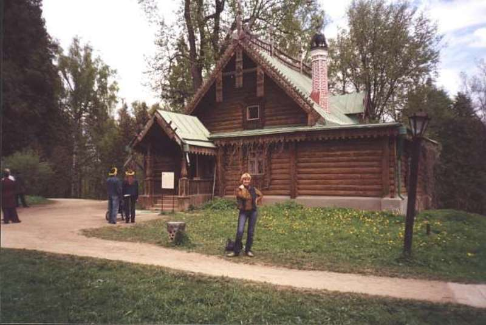

|  | Министерство культуры Российской Федерации Портал Культура.рф Проект «Образы России» |
The memorial estate Abramtsevo
The servant's house

It was built in the 1870s and replaced the old Mamontov-Aksakov's servant's house. Rebuilt in XX century. Initially it was a single-storey house with an attic and with two entries on the same axis - in the front yard and to the backyard. The servant's house was was one of the parts of the estate complex. There was a laundry and servant's kitchen here. A living room was in the attic (has not been preserved to the present day)